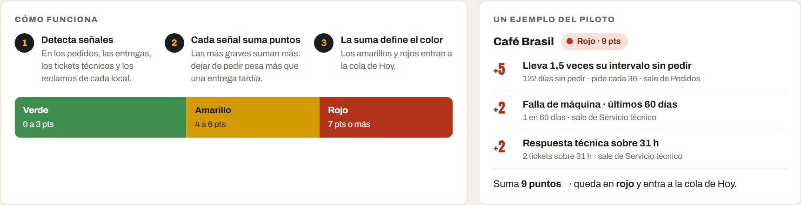

Una consola para que Marley vea cada local a tiempo, y un WhatsApp para que el cliente
no tenga que perseguir a nadie.
De dónde partimos
Marley no retiene a sus clientes:los reconquista
En Horeca, cada reposición reinicia la compra fuera de todo sistema. Y cada reinicio expone al cliente a un atraso, un quiebre o una máquina detenida que nadie vincula con su cuenta.
9,9%
del food service se fuga al año: 287 puntos equivalentes [D]
82%
de las reposiciones Horeca pasa por ejecutivo, correo o mensajería [C]
81%
de la fuga está en Horeca, donde Marley actúa sin terceros [D]
26%
de fichas Horeca completas: no hay identificador único [D]
La causa: sin trazabilidad por local, Marley no ve la fuga a tiempo
C1 Reposición manual · C2 Sin señal propia en el local · C3 840 puntos de terceros sin datos · C4 Sin identidad común
Estimación bajo supuestos, no pérdida observada: aplica la retención del caso (86% Horeca, 90% OCS) a los puntos activos.
El objetivo · 12 meses
+2,3 pp
de venta anual del food service
Reteniendo la base que hoy se fuga y captando nuevos clientes B2B, sin tocar precios ni contratos. Equivale al 17% de la meta de crecimiento del caso [C][D].
OE1
Awareness y captación+25% leadsventa nueva: más clientes entran al embudo
OE2
Fidelización86% → 90%venta conservada: los 2,3 puntos del objetivo
OE3
Recompra18% → 40%venta que hoy se pierde por quiebre
OE4
Red de terceros0% → 80%hace medible el 24,8% de la red
1.1 · Alcance del MVP
Una consola y un WhatsApp, 14 locales, 90 días
8 + 6
locales Horeca y OCS: el máximo que permite el caso [C]
90
días de piloto, con criterios de decisión fijados antes
0
hardware nuevo: corre sobre CRM, ERP y WhatsApp
2
hipótesis: el cliente acepta un canal que registra y la fuga se anuncia
Entra
Ficha única: RUT, local, máquina y contrato
WhatsApp: aviso de fecha, agenda, pedido, estado y fallas
Consola: semáforo, cola Hoy, despachos y servicio técnico
Registro: acciones comerciales y motivo de baja
Queda fuera, por ahora
Portal web: el cliente ya pide por mensajería
Telemetría: falta confirmar qué máquinas envían datos
Modelo predictivo: 14 locales no dan casos suficientes
Estaciones y panaderías: requieren aprobación del operador
1.2 · Propuesta de valor
Al cliente se le quita trabajo. A Marley se le da visibilidad.
Dueño Horeca y encargado OCS
Recibe cuando está en el local, sin perseguir a nadie
Marley le avisa que se acerca su fecha
Elige día y horario; si surge un imprevisto, reagenda
Repite «lo de siempre» con su precio de contrato
Reporta una falla sin llamar
Comercial, coordinación y técnicos
Ve cada local y se adelanta al reclamo
A quién llamar hoy y por qué
Qué está agendado, en ruta o atrasado
Qué máquina espera técnico
Si la fuga baja en el piloto
Regla de diseño: la señal nunca depende de que el dueño haga algo extra
Por qué Marley Nestlé lidera con 60–70% [P] y compite por continuidad; ninguno de 9 proveedores revisados declara pedido con seguimiento [EV].
Segmentos del piloto: Horeca de la Región Metropolitana y OCS de atención directa [C].
1.3 · Viabilidad
Se hace con lo que Marley ya tiene
Base · sem. 1–6Ficha de los 14 locales, consola y plantillas de WhatsApp
Piloto · meses 2–4Pedidos, agenda y tickets por WhatsApp
Calibrar · meses 5–8Semáforo ajustado con historial real
Escalar · meses 9–12Hasta 40% de reposición digital
Al día 90
Escalar si
Detener si
Locales con 2+ pedidos por WhatsApp
≥ 60%
< 30%
Pedidos asociados a su local
≥ 95%
< 80%
Alertas con acción en ≤ 2 días
≥ 80%
< 50%
Visitas agendadas por el cliente
≥ 50%
< 25%
Recursos y riesgos
Recursos: equipo del caso y sin hardware, dentro del tope de $220 M [C]
Adopción baja: se detiene antes de escalar
Semáforo marca a casi todos: se recalibran los pesos
Máquinas con datos: la telemetría entra como fuente extra
1.4 · Arquitectura y flujos
Conecta lo que existe. No reemplaza nada.
Flujo principal · reparto programado
Aviso5 días antes
Agendael cliente elige
ERPpedido programado
Recordatorioel día anterior
Entregamarcada por enlace
Semáforosuma historial
Una sola llave une todo: RUT + local + máquina. La consola se ordena en seguimiento, operación y sistema.
El prototipo
La consola, funcionando
1Marley avisa que se acerca la fecha del local
2El cliente responde por WhatsApp y elige día y horario
3La ficha y el calendario de despachos se actualizan solos
4Si surge un imprevisto, reagenda cuando el cliente puede
Demo en vivoalejog1302.github.io/marley-consola
Datos sintéticos: 2.410 locales y 180 días de pedidos, calibrados a las líneas base del caso. Ningún dato corresponde a clientes reales.
1.5 · Decisiones UX/UI
Cada pantalla responde a un hallazgo
01
Todo pasa en WhatsApp
El 82% ya repone por mensajería o ejecutivo [C]
02
Señales del sistema
Docente: si depende de que el dueño reporte, falla
03
El cliente elige cuándo
Un reparto a un local cerrado es un viaje perdido
04
Semáforo explicable
Los puntajes opacos suelen fallar (Ascarza, 2018)

1.6 · Validación temprana
Lo probamos con un usuario y el Resumen cambió
12
hallazgos
8
de severidad alta
12
mejoras incorporadas
Docente Depender del dueño falla → ninguna señal le exige una acción
Usuario «El Resumen debería llamar a la acción» → titular de estado y escala del semáforo
Usuario «El 4,9 de reclamos, ¿contra qué es bueno o malo?» → cada cifra con su referencia y su denominador
Usuario «Si entro al 4,9 tendría que ver los reclamos» → vista de reclamos y quiebres
Fuentes: reunión con el docente (08-09), revisiones del prototipo y evaluación guiada de 14 minutos con un gerente de producto de retail y fintech (21-09). Los tres hallazgos de esa sesión ya están en el prototipo.
Próxima iteración · test de tareas
T1Encontrar el local más urgente y explicar por qué
T2Registrar la llamada a ese local
T3Ver qué local reagendó y para cuándo
T4Hallar la máquina con más horas sin técnico
T5Explicar con qué sistemas se conecta
3 a 5 personas de perfil comercial o coordinación · éxito, tiempo y dificultad de 1 a 7.
1.7 · Inbound automatizado
Captar con contenido. Retener con avisos.
AtraerVideo de 30 s y checklist de continuidad → formulario
ConvertirVideo de comodato y soporte → agenda por WhatsApp
CerrarDemo de 15 minutos → alta con ficha completa
RetenerBienvenida, cápsula mensual y avisos
Gatillo → acción automática
Leadweb: se clasifica y se asigna un ejecutivo
5dantes de la fecha: «¿programamos tu pedido?»
1dantes: recordatorio para confirmar o cambiar
90dsin mantención: se ofrece la visita
≥7puntos de riesgo: la conversación la toma un ejecutivo
Segmentos: canal, zona, ciclo de vida y color del semáforo · se mide por conducta (pedido, agenda, respuesta), no por aperturas · sólo plantillas aprobadas y con consentimiento [P].
1.8 · E-commerce y operación
La tienda vive en el chat. La operación se ve en la consola.
Avisose acerca la fecha
Agendadía y horario
Confirmaprecio de contrato
Recordatorioconfirmar o cambiar
En rutaestado y atraso
Entregadomarca y evaluación
Cómo convierte
«Repetir pedido» en un toque: 18% → 40% [C]
El aviso llega antes de que se acabe el café
La negociación sigue siendo humana
Qué pide a la operación
Pedido en el ERP con el ID del local
Salida y entrega marcadas desde un enlace
Tickets con máquina y plantilla de terceros
Fricciones que evita
Local cerrado → agenda y reagendar
Repartidor que no marca → un toque
ERP sin local → ficha única antes del piloto
No rediseñamos bodegas ni rutas: Marley ya promete 48 h en la RM y 72–96 h en regiones [C]; la consola lo hace visible y medible.
1.9 · KPIs
Seis indicadores que deciden algo
9,9 → 7,6%
Fuga estimada del food serviceFuente: renovaciones en CRM y ERPDecide si el plan cumple
86 → 90%
Retención HorecaFuente: CRMDecide escalar a toda la red Horeca
18 → 40%
Reposición digital HorecaFuente: WhatsApp y ERPBajo 30% en el piloto, se detiene
0 → 60%
Detección anticipadaFuente: semáforo de la consolaDecide recalibrar los pesos
92 → 96%
OTIFFuente: marca de entregaDecide dónde reforzar el cumplimiento
0 → 50%
Visitas agendadas por el clienteFuente: agenda de DespachosDecide ajustar avisos y franjas
[C] metas del caso · [D] estimación propia · visitas agendadas es supuesto del equipo [S] · la primera respuesta técnica (31 h [C]) se mide en el piloto como línea base.
Lo que proponemos
Que cada pedidodejeuna señal
Marley ya tiene la red, el canal y la relación. Lo que le falta es verla a tiempo.
Un piloto de 90 días en 14 localespara sumar 2,3 puntos de venta en doce meses.
Próximos pasos · entrevistas a decisores · test con usuarios · verificar telemetría · costeo